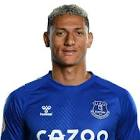

|  | Richarlison |
| Gender | Male |
| Ethnic | Brazilian |
| Job | Brazilian Footballer |
| Desc | Handed the No.9 shirt in the absence of Gabriel Jesus, Richarlison marked his Brazil debut with two goals against El Salvador. Though Jesus has returned in the months since, Richarlison’s scoring form has continued with goals in friendlies against Cameroon, Qatar and Honduras. The Everton man remains a work in progress with his only major contribution coming in last summer’s 2019 Copa America, with a goal in the Selecao’s 3-1 over Peru in the final. Even so, that’s impressive. The No.9 shirt may be in the possession of Jesus for now but, as this list demonstrates all too well, that could be subject to change |
Affiliation
| Org | Brazil National Team |
| Club as Player | Everton FC |
2019 06 01 Retrieve
[Richarlison is aware of the transfer rumours, but claims to be paying little attention to them] It’s a nice feeling when you get praise for your good work, but I’m not thinking about a transfer at the moment. I’ve just arrived at Everton. I’m happy here
2019 06 16 Retrieve
[Richarlison has told Brazil team-mate and Ajax star David Neres to join him at Everton] I’ve spoken to him about it already. I told him the doors are open for him there, and that he could help us a lot. I hope he comes. He’d be very welcome there. I’ve known him since we played together for Brazil Under-20 side, and he’s a guy I get along with really well. Hopefully I’ll see him there.
: 2019 06 27 Tite has confirmed Brazil forward Richarlison will miss Thursday’s Copa America quarter-final against Paraguay through illness
2019 07 05 Retrieve
[Richarlison has revealed Brazil legend Ronaldo to be his inspiration as he prepares to chase down Copa America glory at the Maracana] I’m trying very hard to improve my English. It’s interesting to learn the history of this famous ground and to know that the great names of Pele and Ronaldo have also played before me here. It makes me want to continue to represent Brazil here.
[Pressed further on who his idols are] Ronaldo, especially. I grew up watching his goals on YouTube. The two goals against Germany in the 2002 World Cup final bring back a lot of joy for me. It was a big moment of inspiration to go outside and emulate him
[Every time he finds the target, the opportunity presents itself to bring out his famous pigeon dance celebration] The celebration is from a holiday with my friends in Rio. We were playing football on the beach and, for some reason, I created this celebration. It brought joy in the moment, and I decided to take it on to the pitch when I scored. It really is a beautiful thought to imagine the joy the celebration brings the fans
2019 08 16 Retrieve
[Everton and Brazil hero Richarlison reflects on a year to remember] I’ve been watching the video of my penalty goal every night! It took a while for it to really sink in, to realise what we’d really achieved. For me and my family, it was a great achievement - and that was despite the difficulties that I had during the tournament…
[He was then diagnosed with mumps ahead of the quarter-final with Paraguay. In isolation in a Porto Alegre hospital room, it looked to all intents and purposes as though his Copa was over] That was difficult. Every day I would wake up and look in the mirror to see if the swelling in my neck had gone down. It was a miracle in some senses, because all the research I did said a minimum of two weeks recovery time. Even the doctor didn’t believe I could be back so quickly, in time for the semi-final and the final, but I managed to recover in four or five days
[In doing so, and by scoring in the final and by lifting the trophy, Richarlison followed in the footsteps of his idol, the great Ronaldo Luis Nazario de Lima. The original Ronaldo] I love him. He’s one of the greatest players in football history. The reason I wear yellow boots is because of him. My memory of him is scoring lots of goals in yellow boots, so I chose mine in homage to him! I think about him a lot, and watch videos of him on the way to games. I model myself on him as a player and will continue to do so, given what a great example he is
[He tells a story of meeting Ronaldo at a Nike event in London last year] It was only for a few seconds, but I spoke to him. He told me to keep going as I am, and that I could make it in the Brazilian national team. It was only 20 seconds but it was enough to make me really happy. Before the event, I was shaking at the prospect of meeting him! I was so excited, because I’d only ever seen him before on TV. It was a really special moment for me
[Richarlison has not forgotten the criticism which came his way following his transfer] There was a lot of criticism and negativity about the value of my transfer fee. And like it or not, it was a gamble from the club. The press were on top of me a little bit. I remember one guy [the former Arsenal and England star Paul Merson] said that I had ruined the transfer window, but he doesn’t know me as a player or a person, and even though we try to focus on training and playing, these things do get to us. Thankfully, it didn’t hold me back and I had a good season. I kept my fitness good, my mind was good and I had a good finish to the season. It was here at Everton that I broke into the Brazilian national squad
[Richarlison credits Marco Silva as having played a huge role in his development] Marco is the coach I have worked with most in my career, and we get on really well. He’s there for me, we trust each other. We did that at Watford and now at Everton. He relates really well to the group, to all of the players. I’m really happy here, not just with him but with the whole of the coaching staff. The whole team is happy, and that makes us a strong collective unit
[The arrivals of Fabian Delph, Jean-Philippe Gbamin, Djibril Sidibe and Alex Iwobi, plus the permanent capture of Andre Gomes, mean there is optimism at Goodison] We dream of a place in the Europa League or the Champions League. So bringing in these quality players increases our chances. They will make us stronger, and we will fight to meet these objectives
For us playing at home is an extra joy. That’s what it was like last season, we beat some big clubs and I think it will be the same this season. When you are waiting in the tunnel and you hear that siren, that alarm, your hairs stand on end. You can smell blood and you go onto the pitch really excited and driven to perform for those supporters
2019 08 17 Retrieve
[Richarlison on winning the Copa America on home soil] I’ve been watching the video of my penalty goal every night! It took a while for it to really sink in, to realise what we’d really achieved
2019 08 29 Tweet
[Richarlison explains Messi-evoking shirt celebration in Everton’s win over Lincoln] Play for the name on the front of the shirt and they’ll remember the name on the back
2019 09 06 Retrieve
[Neymar has not featured for PSG since May due to injury concerns and doubts over his future. He is the Brazil national team ahead of their international friendly meetings with Colombia and Peru, and team-mate Richarlison insists he remains happy despite the failed move back to Spain] Everyone knows his importance, not only here in the national team but for his club. And everyone saw his happiness being here in the national team again. So, now we’re cheering for him to have a good match tomorrow [against Colombia] and to help us. Neymar is like everyone here. He’s happy. Life goes on for him, too, even if it didn’t work out for him. I don’t know what happened at his club. What matters is that he is happy here in the Brazilian national team. And the important thing now is that he helps us
2020 03 07 Retrieve
[Everton forward Richarlison tells about how he spends his money] I had practically nothing in my childhood and, suddenly, I can have almost everything. So I value it, I think about the future. I’m not going to buy a big car. I invest in real estate, in other things for the future. Like this apartment here. Mother, father, uncle, grandmother, I already gave everyone their own home. My uncles have a car, my mum likes motorcycles and I bought her one. My sister has three children and I help with their education and health
2020 05 18 Retrieve
[Richarlison outlines ambition to become Everton legend and Brazil regular] My goals are very clear in my head and they are interconnected. Since I arrived, I have always stated that I want to be victorious playing for Everton. I want to help take the club back to a prominent position and win trophies with Everton. I would love to achieve this goal and be remembered as a great player in the history of the club. Regarding individual and long-term goals, my great purpose is to continue to be called up by Brazil and gain more importance in the squad, then have the opportunity to play in a World Cup. For that to happen, I need to continue performing well and scoring goals for Everton
I believe that we always have room to improve, regardless of the level we reach in the game. I am only 23 and just starting my career. I have a lot to learn, especially in a team with so many good players and a tremendous coach. I want to take this opportunity to be the best player possible in every aspect. I believe I am coming into the peak years of my career. Although I am still young, I think at this age we are at the peak of our physical shape and that is when the great players really start to burn bright. I hope that my birthday and this new cycle of my life bring me many good things and that I can always grow and stand out with my club.
2020 06 01 Retrieve
[Everton striker Richarlison says it is an honour to be coached by Carlo Ancelotti] I have the honour to say that I am trained by one of the best coaches ever. Carlo is a coach who sees the game like few others and has a mentality that favours attacking and searching for victories. He is competitive and very smart and likes to have a team that is also that way. He demands the best from each player and knows how to chart the path for us to play our best. It is an honour to be trained by him and I have been trying to learn as much as possible every day we have been together for training or matches.
I believe the team adapted very quickly to the manager’s style and is responding very well to his ideas and methods. We had some unfavourable results before the shutdown and did not play well in the match at Chelsea. But we are feeling better and better. Our performances are becoming more consistent with our way of playing. Whoever plays against our team knows they will face a very tough opponent. I think exchanging ideas is a very important thing in a team that wants to become stronger and more competitive. It’s really a great thing to be able to have this open dialogue with our staff and to contribute in some way. I think the conversations help all of us on the pitch and also assist our coach’s decision-making.
2020 06 11 Retrieve
[Richarlison on Carlo Ancelotti] Carlo is one of the greatest of all time and it has been a privilege to work with him. I am learning a lot from him and I am sure we will achieve good things together. Ancelotti is one of the greatest coaches in history, in my opinion. I think the club has a lot to gain from him. He has a winning spirit and does not accept less than the maximum you can leave on the pitch. This mentality and the respect everyone has for him are very important and will help us a lot
[Everton are currently 12th in the table but six points behind Sheffield United in seventh and within vague touching distance of Manchester United in fifth, which could qualify for the Champions League, but eight points adrift] I think a lot can happen in nine games, the teams are very close in the table and instead of looking back and searching for mistakes, I prefer to think about the games ahead of us. We want to have as many good results as possible to, who knows, enter the fight for a place in a continental tournament. We have to keep that flame burning
2020 06 19 Retrieve
[Richarlison takes shot at Van Dijk ahead of Merseyside derby] People talk a lot about him [Van Dijk]. Yes, he is a great defender, but I’ve already dribbled past him. He was chosen as one of the top three in the world as he had an excellent season, but yes, for me, there are better defenders.
[Asked which players he thinks are better than the 28-year-old] Thiago Silva, Marquinhos and Sergio Ramos
2020 06 20 Retrieve
[Everton’s Brazil international Richarlison has claimed he received offers from Barcelona and Manchester United in January that were each turned down] There were lots of offers during the season, from Barcelona, from Manchester (United). But the club opted to keep me in the group and I didn’t want to leave in the middle of the season. It’s bad to leave team-mates like this
2020 06 20b Retrieve
[Richarlison reveals Barcelona & Man Utd offers but is happy to be at Everton] There were lots of offers during the season, from Barcelona, from Manchester (United). But the club opted to keep me in the group and I didn’t want to leave in the middle of the season. It’s bad to leave team-mates like this
Of course you feel impacted, Barcelona is one of the greatest clubs in the world, but I think happiness plays its part as well